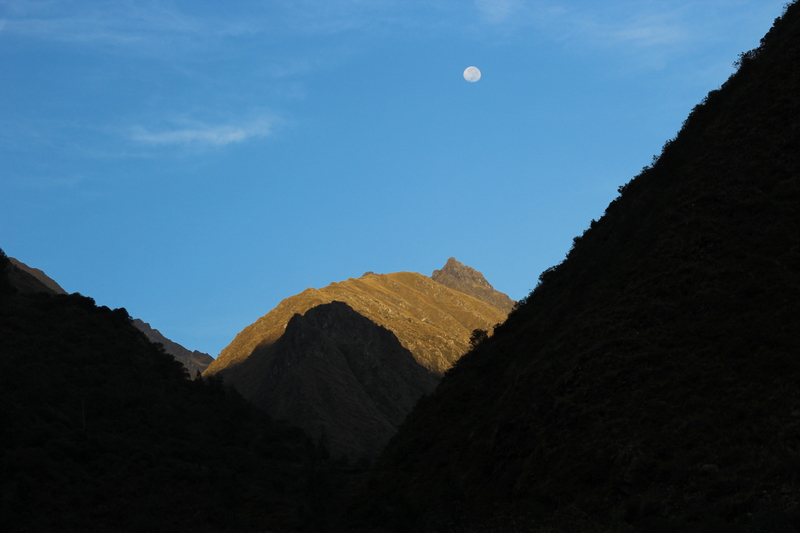
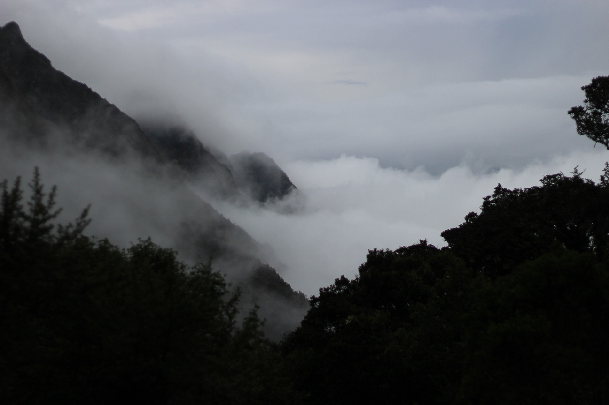
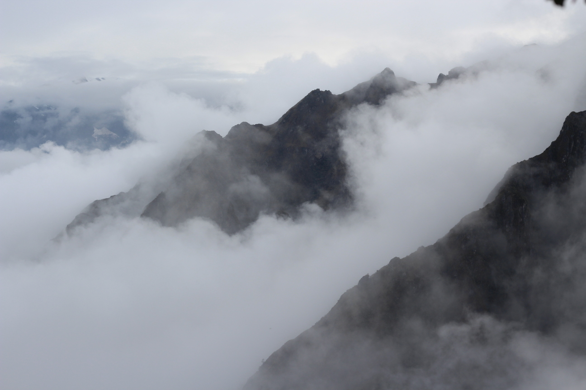
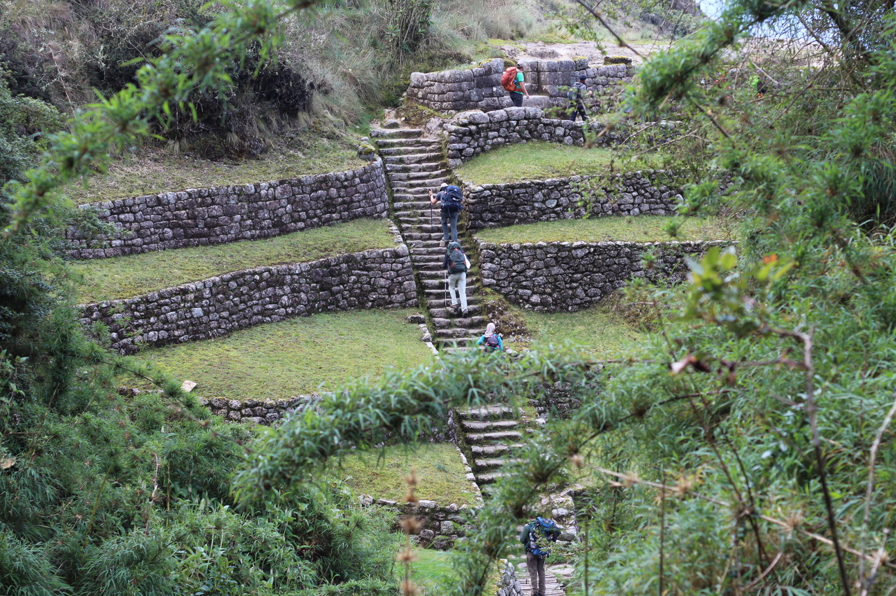
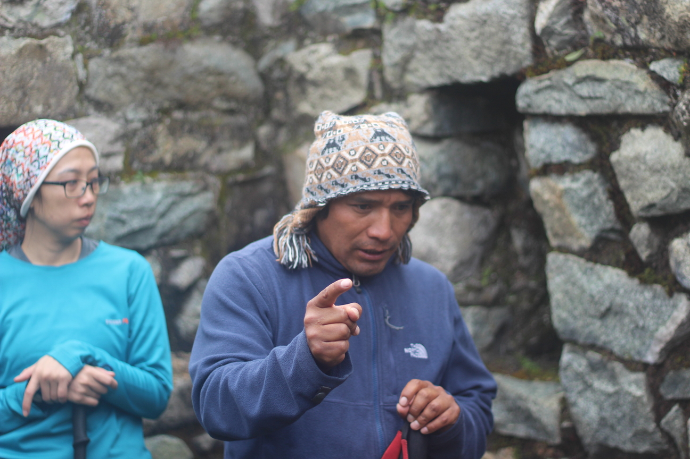
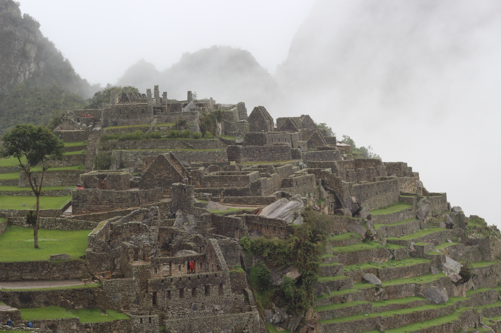
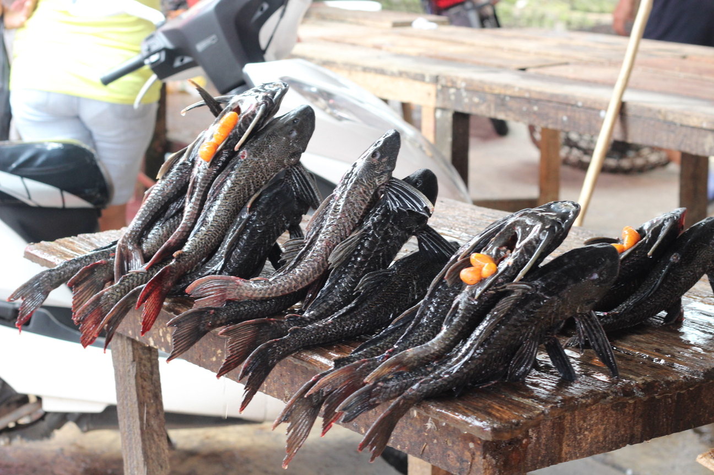
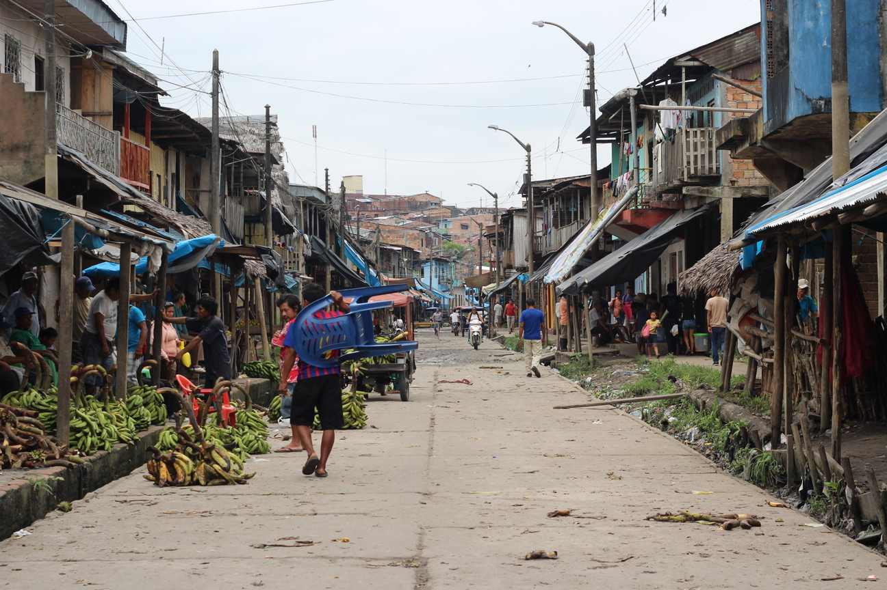
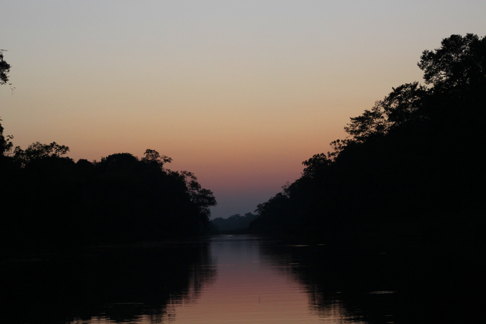

We are travelling around the islands of Polynesia.
Inca Trail + Iquitos
I called this one "one last trip before the world ends." I suppose I was right. I've been preparing for this one for almost 10 months. It started in Providence, RI, sometime in February. I was participating in a program in Probabilistic combinatorics there, living in a converted mall and crashing a whole lot of computer security seminars. I realized while querying some flight search engines, that taking a multi-city flight from the US to Lima, then from Lima to Easter Island and back to the US only adds up to $1k. And booked it. I guess hanging out with Ian, archeologist extraordinaire, may have been additional motivation. I knew that I was gonna get a long break away from Dartmouth from Thanksgiving to New Years, and wasn't gonna waste it. And just as well - 10 months is a good time gap to book the Inca Trail passage with a decent company, especially during a time as popular as Thanksgiving. So, at Miami airport, waiting for a flight to Lima I took my first round of altitude meds. From Lima I was gonna fly to Cuzco. I'd considered taking a bus, but distances around the equator are much greater than they look on the map. Damn Euro-centric map projections. Also, you know, the Earth is round. ;) I really regret not making detailed notes from the journey. Writing this in 2020, I only remember snippets. The most vivid memories are of mu fellow hikers - but I don't have the right to violate their privacy here. Suffice to say, it was fascinating how much we found in common despite all being very different. And without a proper diary I don't think I can do the hike justice in writing. The photos will have to suffice.




(Percy)

The last day was rainy and we've reached Maccu Piccu bretty exhausted.


I've heard of Iquitos years ago from Lisa. The biggest city in the world that has no roads going to it. Accessible only by plane or boat up the Amazon. She had many wonderful stories from the Amazon - of course she spent months there. I only had days. But holy crap was it mind-blowing.


The most memorable part, of course, is my journey into deep jungle to take Ayahuasca. Wasn't going to. Kinda got talked into it by some random dude who took me to an intermediary who offered to take me way into a jungle to meet a shaman for at a somewhat excessive price. In hindsight, this was a terribly reckless thing to do. (Ciekawostka dla polskich czytelników: pośrednik twierdził, że jeździ do niego Cejrowski na dragi. Że jeżdzi na dragi wierzę, nie wiem, czy akurat do niego.) So, we took a motroboat up the river and then a smaller motorboat up a smaller river, then a canoe... Then we walked through a jungle... until we reached a village. The village had a shaman (no posing or dressing up, just a dude doing rituals). So that night, I drank the rotten tree juice (it's super foul) and spent the next 4 hours throwing up and thinking I'm dying. No visions. Just anxiety and throwing up. The shaman was singing over me the entire time, which was pretty helpful actually. At least I could pace my breath to the singing an avoid a panic attack. The next day we made our way back to Iquitos and I was really thankful to be alive.

I had a day in Lima on the way to Easter Island, and took it as an oportunity to meet my cousin Federico. Turns out, I have Peruvian family on my maternal grandfather's side. One of his cousins took refuge in Peru during the war. Federico is a history lecturer and his brother Harald is a mathematitian of some renown. Guess they took the same two paths as me and Tommy. :)